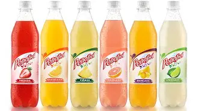

Las ADAS (Aguas Saborizadas) son bebidas con base de agua mineral o purificada que incluyen sabores frutales. Son una alternativa más ligera frente a los refrescos tradicionales.
Dentro del portafolio de Peñafiel, las ADAS representan una categoría importante por su innovación y variedad de sabores.
